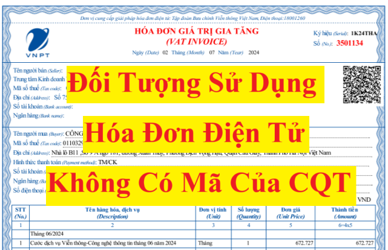

Hóa đơn điện tử không có mã của cơ quan thuế là hóa đơn điện tử do tổ chức bán hàng hóa, cung cấp dịch vụ gửi cho người mua không có mã của cơ quan thuế.
Theo quy định tại điều 91 của Luật Quản lý thuế 38/2019/QH14 thì đối tượng sử dụng hóa đơn điện tử không có mã của cơ quan thuế gồm có:
Doanh nghiệp kinh doanh ở lĩnh vực:
+ Điện lực
+ Xăng dầu
+ Bưu chính viễn thông
+ Nước sạch
+ Tài chính tín dụng
+ Bảo hiểm
+ Y tế
+ Kinh doanh thương mại điện tử
+ Kinh doanh siêu thị
+ Thương mại
+ Vận tải hàng không, đường bộ, đường sắt, đường biển, đường thủy
+ Và doanh nghiệp, tổ chức kinh tế đã hoặc sẽ thực hiện giao dịch với cơ quan thuế bằng phương tiện điện tử, xây dựng hạ tầng công nghệ thông tin, có hệ thống phần mềm kế toán, phần mềm lập hóa đơn điện tử đáp ứng lập, tra cứu hóa đơn điện tử, lưu trữ dữ liệu hóa đơn điện tử theo quy định và bảo đảm việc truyền dữ liệu hóa đơn điện tử đến người mua và đến cơ quan thuế thì được sử dụng hóa đơn điện tử không có mã của cơ quan thuế khi bán hàng hóa, cung cấp dịch vụ, không phân biệt giá trị từng lần bán hàng hóa, cung cấp dịch vụ, trừ trường hợp rủi ro về thuế cao theo quy định của Bộ trưởng Bộ Tài chính và trường hợp đăng ký sử dụng hóa đơn điện tử có mã của cơ quan thuế.
+ Xăng dầu
+ Bưu chính viễn thông
+ Nước sạch
+ Tài chính tín dụng
+ Bảo hiểm
+ Y tế
+ Kinh doanh thương mại điện tử
+ Kinh doanh siêu thị
+ Thương mại
+ Vận tải hàng không, đường bộ, đường sắt, đường biển, đường thủy
+ Và doanh nghiệp, tổ chức kinh tế đã hoặc sẽ thực hiện giao dịch với cơ quan thuế bằng phương tiện điện tử, xây dựng hạ tầng công nghệ thông tin, có hệ thống phần mềm kế toán, phần mềm lập hóa đơn điện tử đáp ứng lập, tra cứu hóa đơn điện tử, lưu trữ dữ liệu hóa đơn điện tử theo quy định và bảo đảm việc truyền dữ liệu hóa đơn điện tử đến người mua và đến cơ quan thuế thì được sử dụng hóa đơn điện tử không có mã của cơ quan thuế khi bán hàng hóa, cung cấp dịch vụ, không phân biệt giá trị từng lần bán hàng hóa, cung cấp dịch vụ, trừ trường hợp rủi ro về thuế cao theo quy định của Bộ trưởng Bộ Tài chính và trường hợp đăng ký sử dụng hóa đơn điện tử có mã của cơ quan thuế.
Vậy là: Nếu công ty của bạn kinh doanh ở lĩnh vực nêu trên thì doanh nghiệp của bạn thuộc đối tượng sử dụng hóa đơn điện tử không có mã của cơ quan thuế
Công ty đào tạo Kế Toán Diệu Tâm mời các bạn tham khảo thêm:
Mẫu hóa đơn điện tử không có mã của cơ quan thuế
Chuyển đổi áp dụng hóa đơn điện tử
Theo điều 8 của Thông tư 32/2025/TT-BTC hướng dẫn thực hiện Nghị định 70/2025/NĐ-CP có hiệu lực từ ngày 01/06/2025 thì:
1. Người nộp thuế đang sử dụng hóa đơn điện tử không có mã nếu có nhu cầu chuyển đổi áp dụng hóa đơn điện tử có mã của cơ quan thuế thì thực hiện thay đổi thông tin sử dụng hóa đơn điện tử theo quy định tại Điều 15 Nghị định số 123/2020/NĐ-CP (được sửa đổi, bổ sung tại khoản 11 Điều 1 Nghị định số 70/2025/NĐ-CP).
2. Người nộp thuế thuộc đối tượng sử dụng hóa đơn điện tử không có mã theo quy định tại khoản 2 Điều 91 Luật Quản lý thuế nếu thuộc trường hợp được xác định rủi ro cao về thuế theo quy định tại Thông tư số 31/2021/TT-BTC ngày 17 tháng 5 năm 2021 của Bộ Tài chính quy định về áp dụng rủi ro trong quản lý thuế và được cơ quan thuế thông báo (Mẫu số 01/TB-KTT Phụ lục IB ban hành kèm theo Nghị định số 70/2025/NĐ-CP) về việc chuyển đổi áp dụng hóa đơn điện tử có mã của cơ quan thuế thì phải chuyển đổi sang áp dụng hóa đơn điện tử có mã của cơ quan thuế. Trong thời gian mười (10) ngày làm việc kể từ ngày cơ quan thuế thông báo, người nộp thuế phải thay đổi thông tin sử dụng hóa đơn điện tử (chuyển từ sử dụng hóa đơn điện tử không có mã sang hóa đơn điện tử cỏ mã của cơ quan thuế) theo quy định tại Điều 15 Nghị định số 123/2020/NĐ-CP (được sửa đổi, bổ sung tại khoản 11 Điều 1 Nghị định số 70/2025/NĐ-CP). Sau 12 tháng kể từ thời điểm chuyển sang sử dụng hóa đơn điện tử có mã của cơ quan thuế, nếu người nộp thuế có nhu cầu sử dụng hóa đơn điện tử không có mã thì người nộp thuế thay đổi thông tin sử dụng hóa đơn điện tử theo quy định tại Điều 15 Nghị định số 123/2020/NĐ-CP (được sửa đổi, bổ sung tại khoản 11 Điều 1 Nghị định số 70/2025/NĐ-CP), cơ quan thuế căn cứ quy định tại khoản 2 Điều 91 Luật Quản lý thuế và quy định tại Thông tư số 31/2021/TT-BTC của Bộ Tài chính để xem xét, chấp nhận hoặc không chấp nhận.
